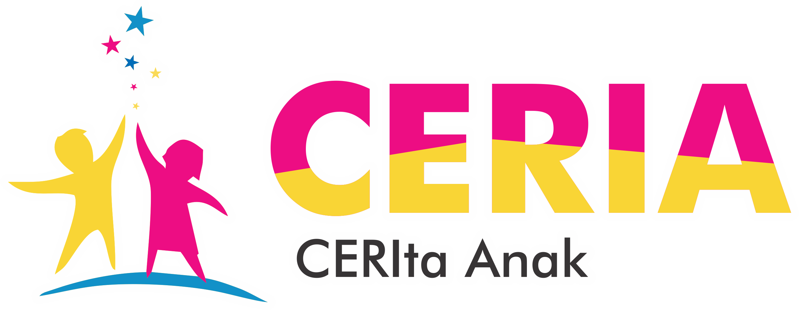
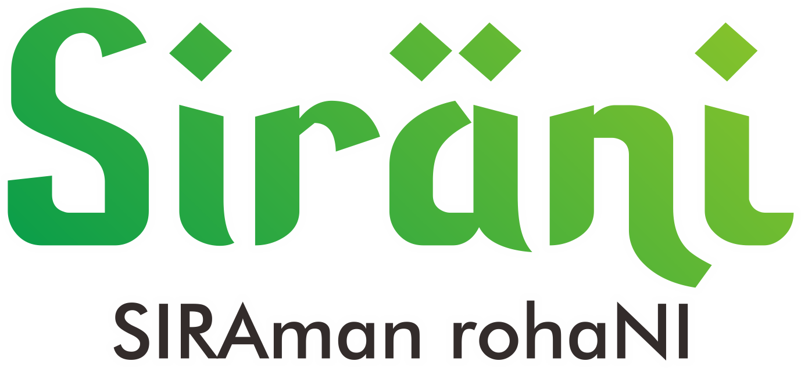

Program Unggulan

MAKNA LOGO
1.Tanda Petik menyimbolkan argumen para pendengar yang akurat
2.Logo Berbentuk Durian yang Melambangkan Nama Program Radio yaitu Tempoyak
Berasal yang berasal dari Buah Durian
3.Salah satu duri memanjang sehingga jadi bentuk balon text melambangkan
argumen para pendengar

MAKNA LOGO
Menyimbolkan Keceriaan Anak

MAKNA LOGO
Figura Foto Menyimbolkan Kenangan Masa Lalu Yang Disajikan dalam Bentuk Tembang/Lagu pada siaran Teman ABANG

MAKNA LOGO
Font Huruf yang digunakan bertemakan islami Melambangkan isi siaran radio berupa nasiha maupun dakwah islam
PENYIAR

ANNOUNCER RADIO I
ALDO